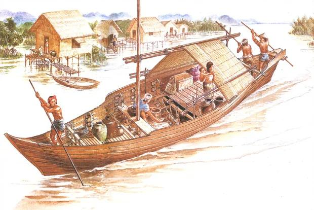
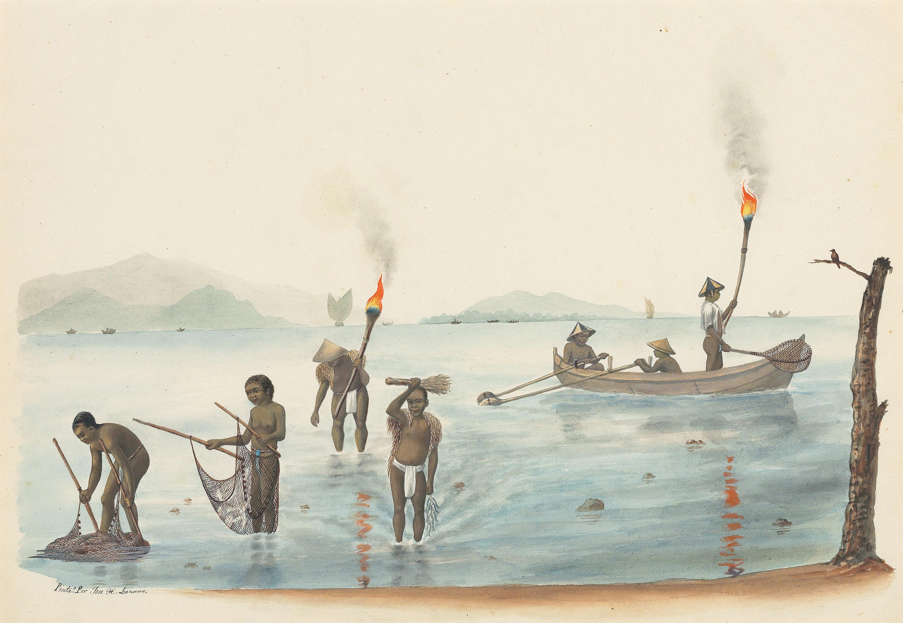
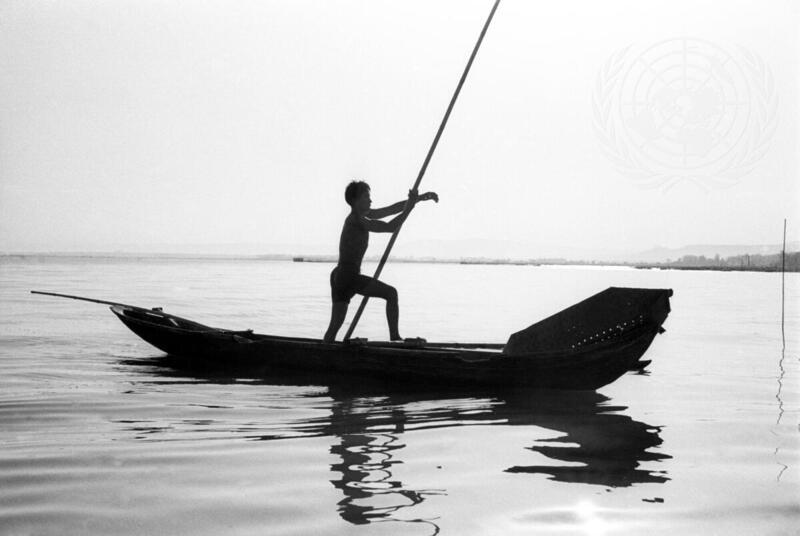
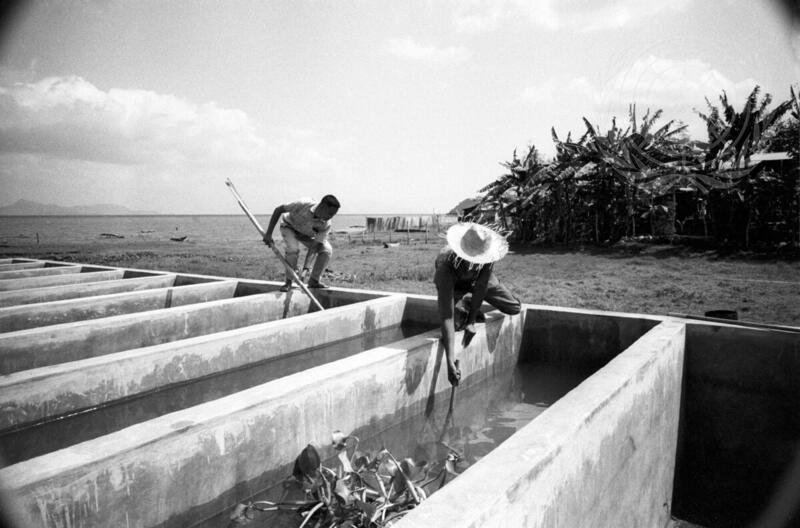
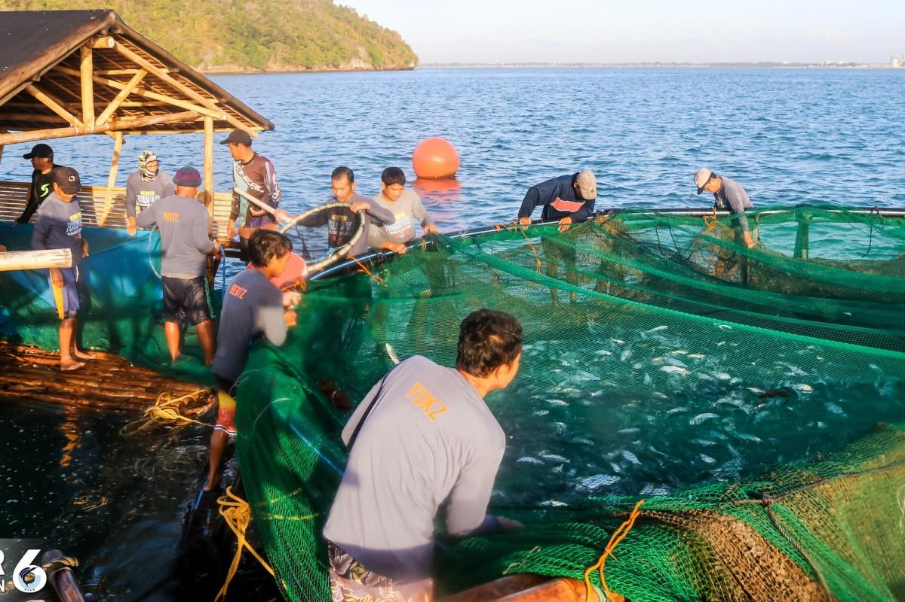

Pre-Colonial
Early Filipinos depended on fishing as an important source of food and livelihood. They used traditional fishing methods such as hook-and-line fishing, fish traps, nets, spears, and boats. Coastal communities also developed fishing and trading practices that supported their daily lives.
➜

Spanish Era
During the Spanish colonial period, fishing remained an important source of food and livelihood. Coastal communities continued their traditional fishing practices, while fish preservation methods such as drying, salting, and fermentation became important ways of storing and trading fish.
➜

American Era
During the American period, the fishing industry gradually developed through improved fishing techniques, fish preservation, and commercial fishing activities. Government initiatives and institutions also contributed to the development of fisheries education, research, and resource management.
➜

Post-War Period
After World War II, the Philippine fishing industry continued to expand through the introduction of motorized fishing boats, improved fishing equipment, and larger commercial fishing operations. Fishpond aquaculture also developed, particularly in the production of milkfish (bangus) and other aquatic products.
➜

Modern Era
In the modern era, the Philippine fisheries sector became more regulated through the Philippine Fisheries Code of 1998 (Republic Act No. 8550). It was amended by Republic Act No. 10654 in 2015 to strengthen the fight against illegal, unreported, and unregulated fishing and promote the sustainable management and protection of aquatic resources.